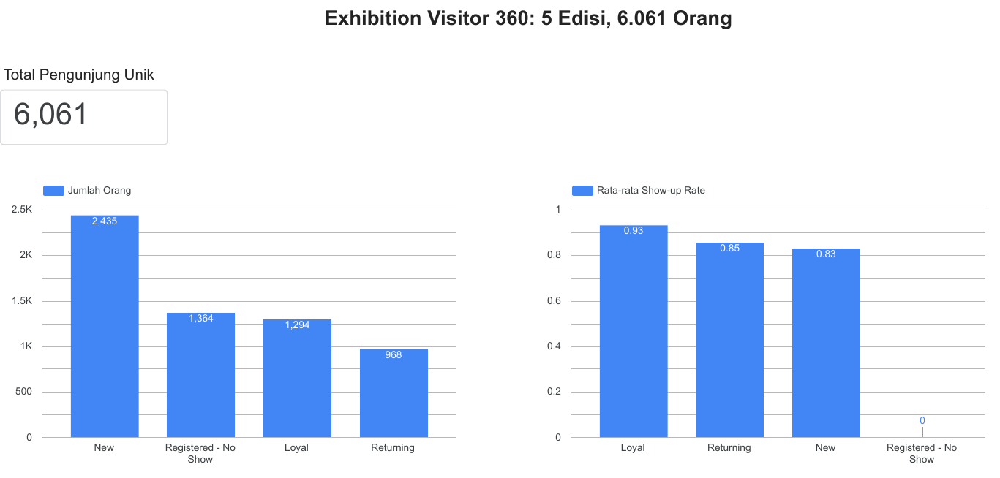
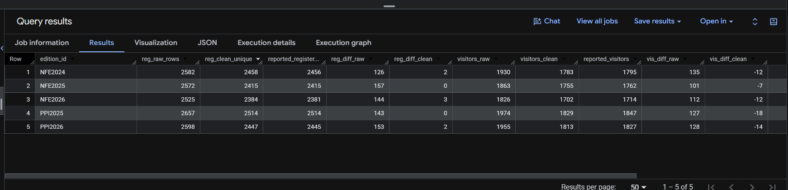

SQL · BigQuery · Data quality
Exhibition Visitor 360
An exhibition organizer kept visitor data in 3 separate systems, and the numbers never matched. We cleaned and merged them in BigQuery into one table with one row per person, then checked the result against the official reports.
- 1Load3 systems + official report, 5 editions
- 2Cleanemails, phones, company names, duplicates
- 3Match peoplesame email or phone = same person
- 4Checkcompare with official numbers →


The problem
What was wrong
- Registrations (CRM) had duplicates, typo emails, mixed phone formats and company names written many ways.
- Attendance scans (ERP) had double scans and IDs with different casing or spaces.
- Campaign events (marketing, nested JSON) had duplicate events and emails in capital letters.
- Registrations were 126 to 157 higher than the official report in every edition.
Questions nobody could answer
- How many unique people really came?
- Who are the loyal visitors that come every year?
- Which registered people never showed up?
- Can we trust the numbers in the official report?
What we did
Pipeline (BigQuery SQL)
- Loaded 4 raw tables and kept them untouched.
- Wrote reusable SQL functions to clean email, phone and company name.
- Removed duplicate registrations, scans and events.
- Gave each person one ID by matching email or phone across all 3 systems.
- Built the visitor_360 table: editions attended, segment and campaign engagement.
Segments
- Loyal: attended 3 or more editions (1,294 people).
- Returning: attended 2 editions (968).
- New: attended 1 edition (2,435).
- Registered, no show: never attended (1,364).
Step 2 · Data quality, before and after
Quality score is the average of completeness, validity, uniqueness, consistency and integrity checks.
| Measure | Before | After |
|---|---|---|
| Data quality score | 75.5% | 99.0% |
| Registration rows | 12,934 | 12,218 |
| Phones in standard format | 23% | 98% |
| Registration gap vs official report | +126 to +157 per edition | 0 to +3 per edition |
All data is synthetic and generated by a script (seed 42). No company data was used.
Step 3 · Matching people across systems
Two records with the same clean email or the same clean phone are the same person. Example from the campaign step: remove duplicate events first, then attach a person ID.
CREATE OR REPLACE TABLE exhibition_cdp.stg_campaign_events AS
WITH dedup AS (
SELECT * EXCEPT (rn)
FROM (
SELECT *, ROW_NUMBER() OVER (
PARTITION BY event_id ORDER BY event_timestamp) AS rn
FROM exhibition_cdp.raw_campaign_events
)
WHERE rn = 1
)
-- then clean email and phone, and join to person_id
Checked against the answer key from the data generator: 0% wrong merges, and 99% of people kept whole.
Step 4 · Reconciliation with the official report
Difference between our count and the official number, per edition. Closer to 0 is better.
| Edition | Registrations before | Registrations after | Visitors before | Visitors after |
|---|---|---|---|---|
| NFE2024 | +126 | +2 | +135 | -12 |
| NFE2025 | +157 | 0 | +101 | -7 |
| NFE2026 | +144 | +3 | +112 | -12 |
| PPI2025 | +143 | 0 | +127 | -18 |
| PPI2026 | +153 | +2 | +128 | -14 |
Registrations now match almost exactly. Visitors end up 7 to 18 below the official figure (about 1%). The remaining gap comes from gate scans with no registration, which cannot be linked to a person. We report it as is instead of hiding it.
Tools
BigQuery (sandbox, free), SQL with CTEs, window functions, user-defined functions and nested JSON, Python (pandas) for the first version of the pipeline, and Data Studio for the dashboard.
See the code on GitHubNeed a dashboard or cleaner data?
Send us a sample of your data and what you want to track. We will tell you what we can build and how long it takes.
Chat me on WhatsAppEmail usUpwork profileGitHubLinkedIn